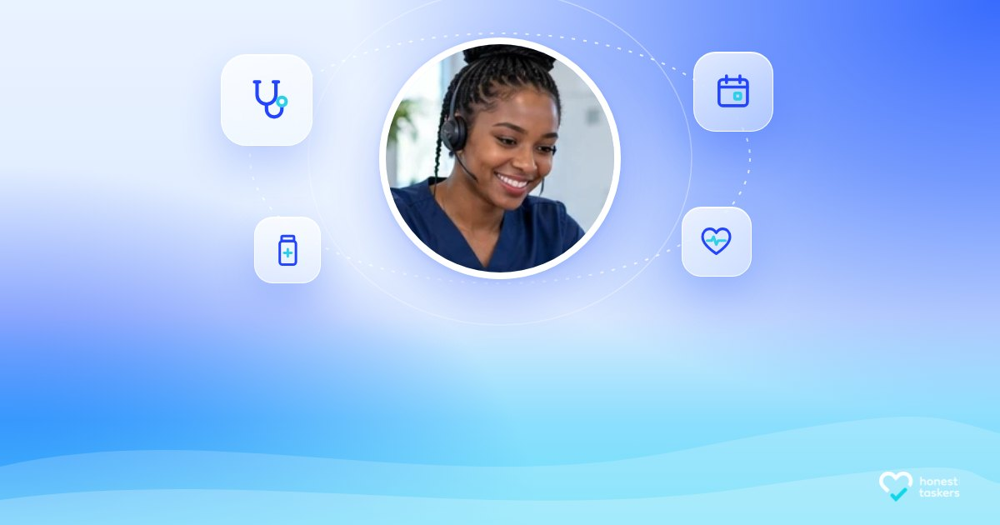
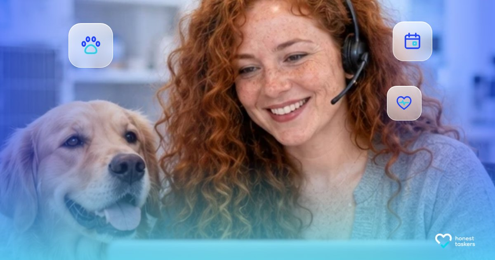
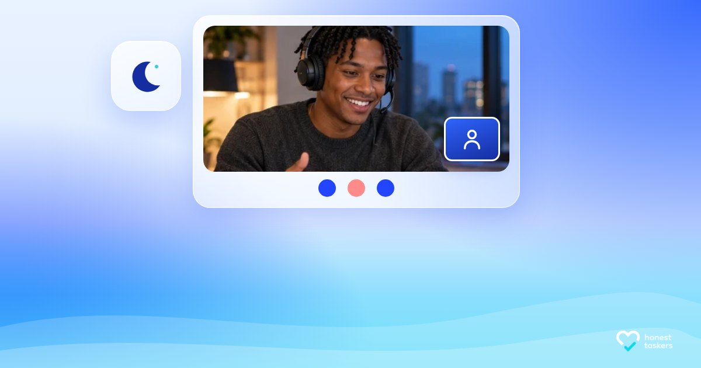
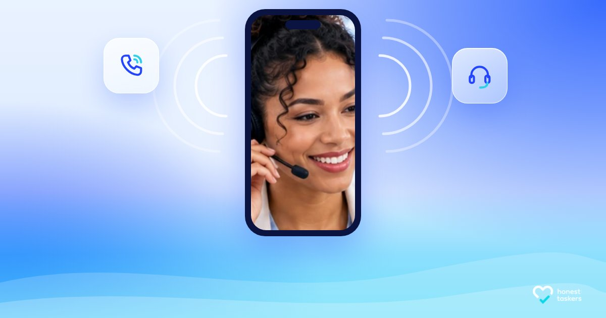
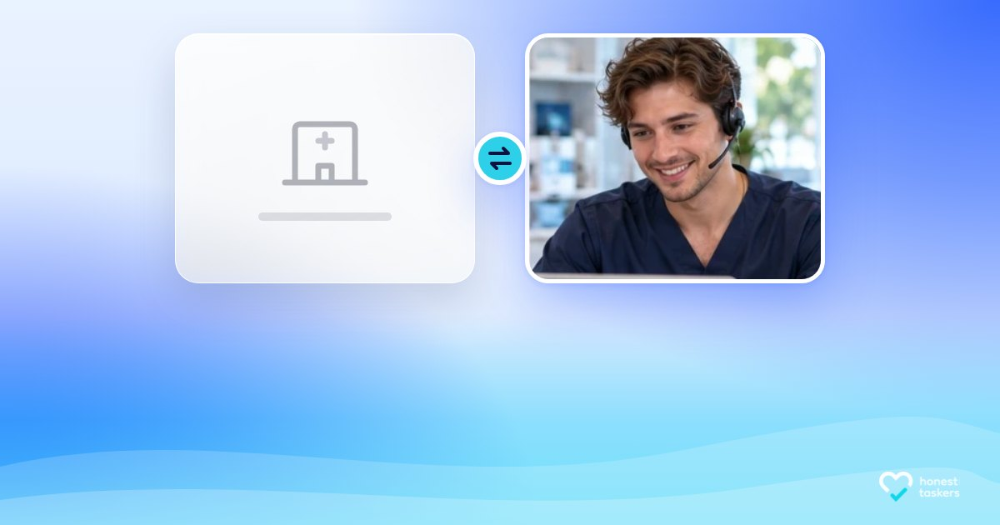

These are the 10 layouts for the people covers. Each has a different frame: arch window, orbit portrait, your current full-photo look, video call, polaroid, phone screen, diagonal split, blob portrait, blue duotone, side-by-side cards. All use the same see-through gradient and frosted glass as the 72 word-free covers, and none has words on it.
P01 now uses the first new photo (made with ChatGPT from the prompts). The other nine people are still stand-ins from your current images. They show why new photos are needed: they look alike, and some still carry the old floating tiles (most visible in P03 and P09). After you share your Figma plan key, I'll generate 10 new, clearly different people and drop them into these exact layouts.
P01 · Arch windowWhat Skills Does a Virtual Dental Assistant Need?

P02 · Orbit portrait7 Best Virtual Medical Assistant Companies for Specialty Veterinary Hospitals

P03 · Current look, refinedHow to Hire an Internal Medicine Virtual Medical Assistant

P04 · Call window9 Best After-Hours Medical Answering Service CompaniesP05 · PolaroidVeterinary Billing Virtual Assistant Interview Questions

P06 · Phone screenMedical Answering Service Outsourcing ServicesP07 · Diagonal splitIn-House Staff vs. Virtual Team for Multi-Specialty Medical Groups: Key Differences and Which to ChooseP08 · Blob portrait7 Best Medical Transcription Outsourcing CompaniesP09 · DuotoneHow Much Does an Orthopedics VMA Cost?

P10 · Side-by-side cardsVirtual Medical Scribe vs In-House Staff
Who goes in when we generate
Nigerian woman, braided updo, scrubs
Filipino man, short undercut, home office
Indian woman, long braid, clinic desk
Somali woman in a hijab, care coordination
Irish woman, curly red hair, freckles, vet clinic
Korean man, glasses, side part, billing
Mexican woman, about 55, grey-streaked bob, dental office
Black American man, about 45, shaved head and beard, telehealth
Brazilian woman, natural curls, therapy practice
Vietnamese woman, pixie cut, scheduling on two monitors
The photos will be realistic and natural: no floating UI tiles, no checkmarks, and room left for the glass elements. The plan key looks like team::1234567890 or organization::1234567890; the number is in the address bar when you open your team or organization in Figma.